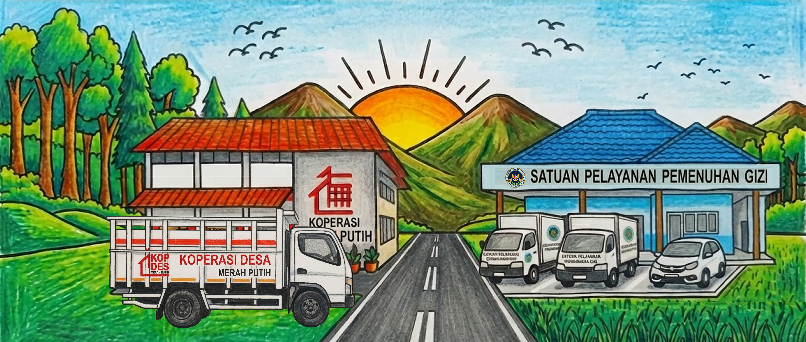
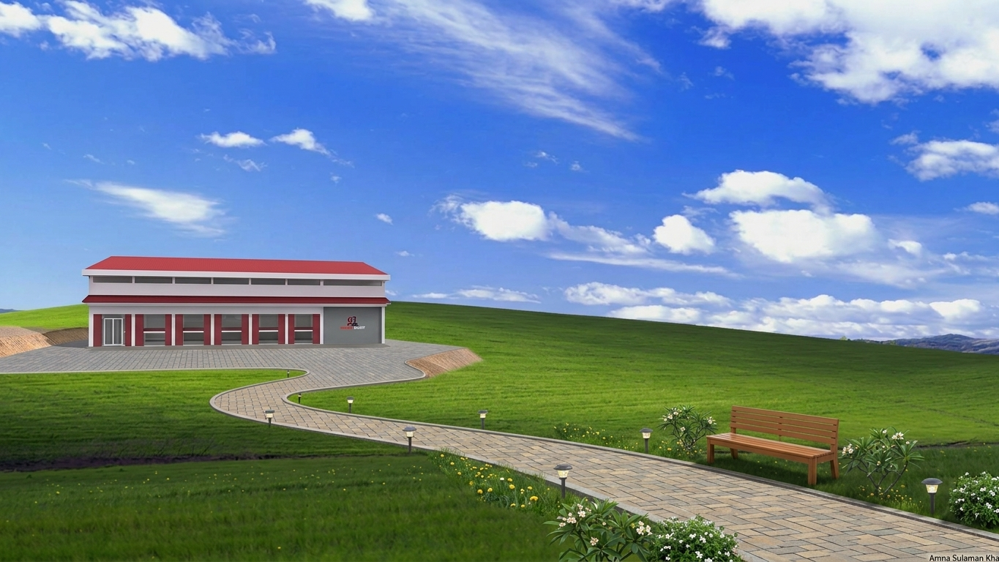
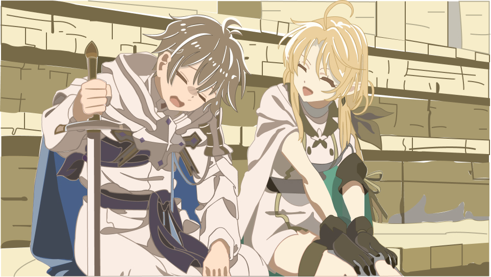
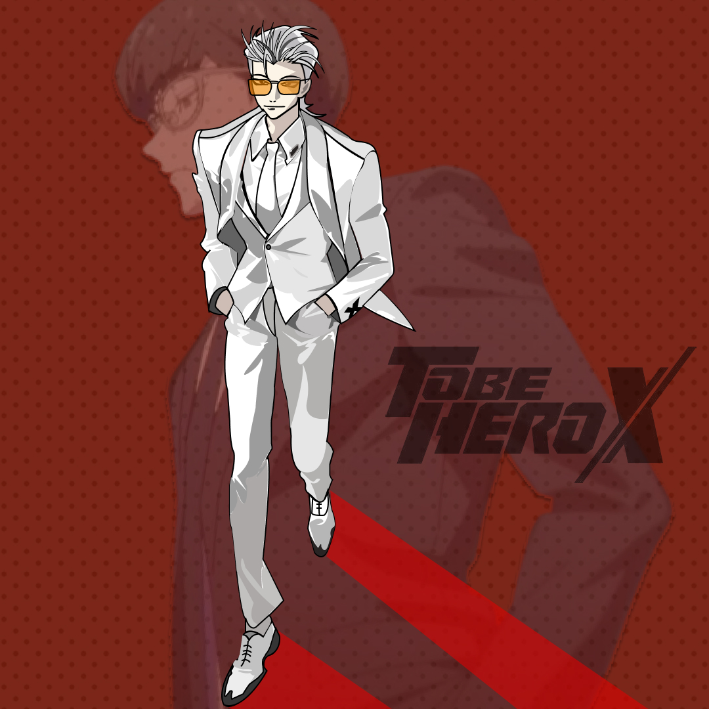
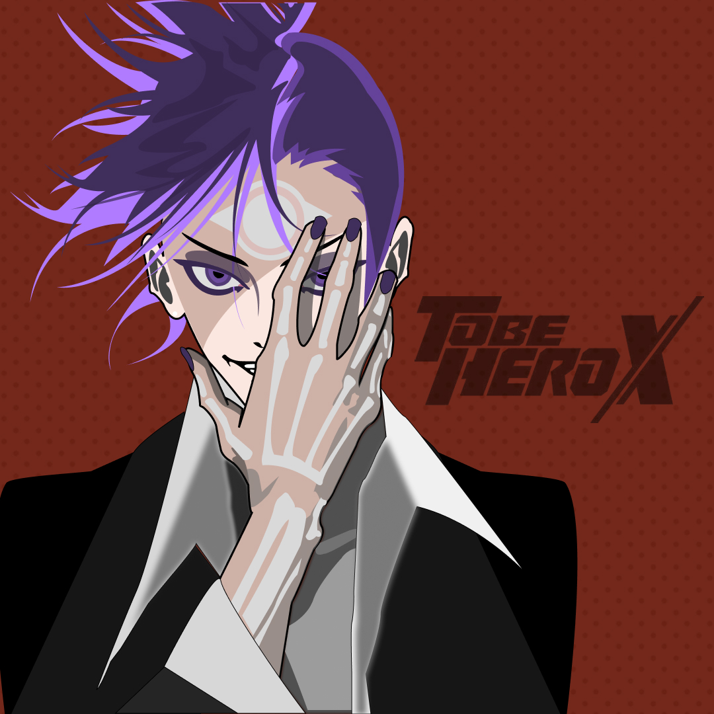
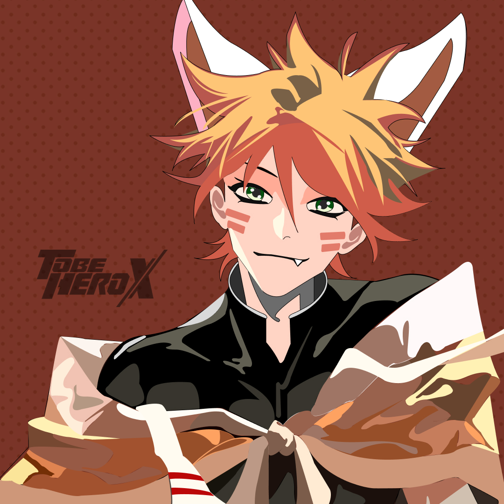
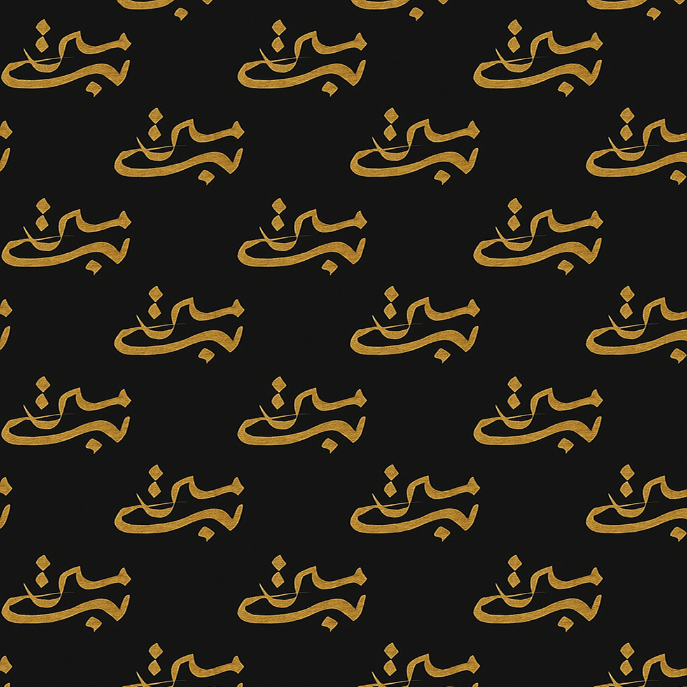
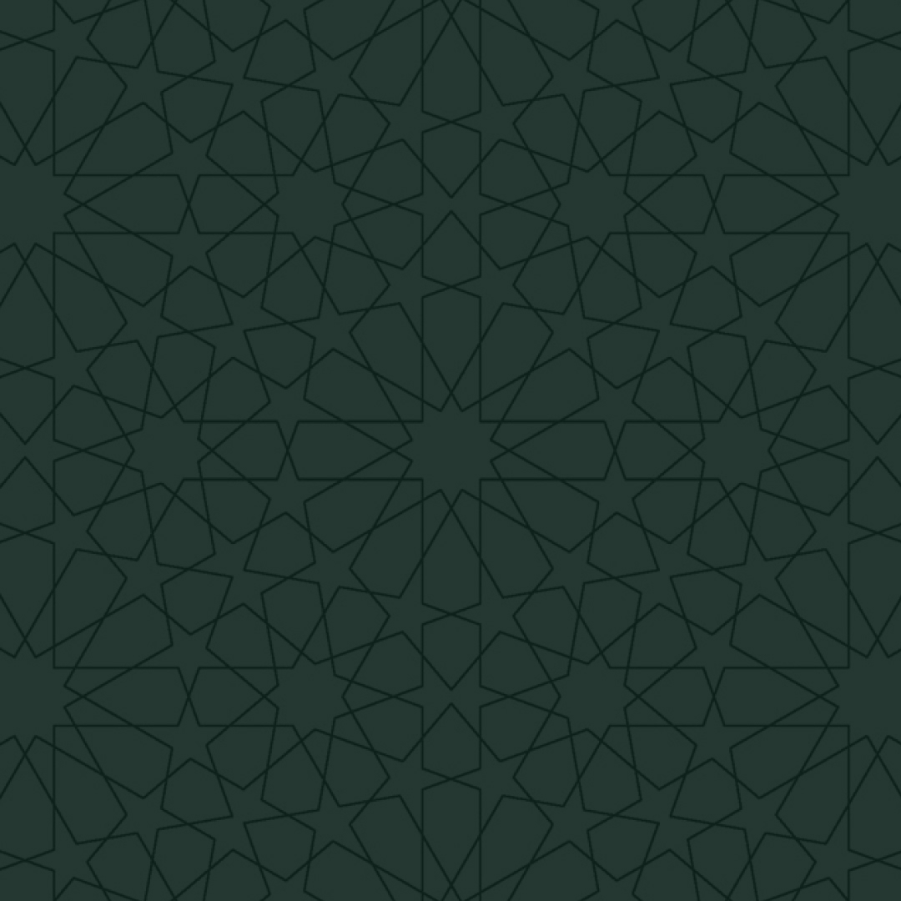
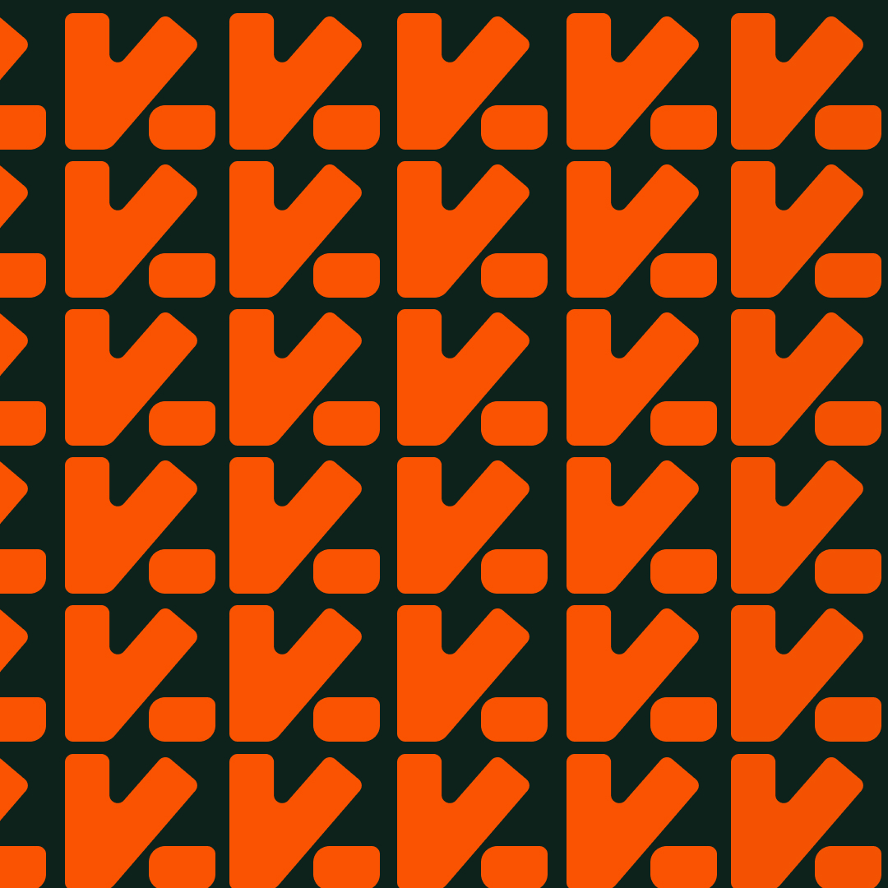

Saya lulusan baru Program Studi Informatika, dengan fokus pada UI/UX dan desain grafis. Selama kuliah, saya aktif berorganisasi dan mengikuti pelatihan untuk mengembangkan kemampuan desain serta cara berpikir kreatif. Saya cepat belajar, bekerja dalam tim, dan sedang mencari kesempatan entry-level di bidang UI/UX atau desain grafis.
Berawal dari ide hingga implementasi desain, proyek-proyek ini menunjukkan komitmen saya terhadap desain yang user-friendly.
01Amanda | UI/UX Study Case | Bachelor Final Project | Mobile Apps
As part of a UI/UX study case, this project focuses on applying the Design Thinking method to design a more intuitive and efficient online sales system for Amanda Store, a small business transitioning to a digital platform.
Project impact
Improved navigation flow and clearer interface design.
Implementation of responsive design on mobile applications.
Thoughtful use of typography and layout composition, creating a visually balanced and accessible interface.
Usability validation conducted using the System Usability Scale (SUS), confirming the design’s effectiveness and user acceptance.
02e-Zakat Ar-Royyan Mosque | Research Based with Lecturer | Website Apps
This project was conducted as a research collaboration with my lecturer, focusing on designing a digital zakat and sedekah platform that simplifies donation management and enhances transparency for users.
Project impact
Developed a responsive web interface for zakat and sedekah transactions with clear payment flow and real-time history tracking.
Integrated a Zakat Calculator feature to help users calculate contributions accurately.
Improved accessibility and readability through structured layout and consistent visual hierarchy.
Usability testing confirmed high satisfaction and ease of use among respondents.
As part of my design portfolio development, this project focuses on creating a reminder mobile application with an intuitive and user‑friendly interface. The goal is to help users manage their daily activities efficiently through a clean, responsive, and functional design.
Project impact
Minimalist interface design that is easy to use.
Integration of core features such as daily reminders, calendar view, and notification settings.
Consistent visual hierarchy through thoughtful color and font choices.
As part of a Coding Camp by DBS Fondation 2025, this project applies the problem approach to create an intuitive and visually engaging travel website, a platform that helps users explore Bali’s cultural and natural destinations effortlessly.
Small experiments in identity, finance, and the shape of useful interfaces.
Ar-Royyan
Zakat website · Product motion


Photo
Manipulation
Social Media
Instagram · Post




Illustrator
Character illustration



Pattern Design
Decoration
Certificates
Design
My skills
Tools I use to bring ideas to life
Claude AI
Support research, explore ideas, map user flows, and shape clear design documentation.
Design Ecosystem
Move from collaborative interface design to polished graphics and social content.
Pinterest
Gather visual references and build moodboards to find a clear direction for each project.
Maze & Google Forms
Run usability tests and collect feedback to improve prototypes with real user input.
Where I've been
Experience.
Working across social media design, UI Design, and the details that make a system feel cohesive.
PT Pos Indonesia (Persero) Bekasi 17000
Magang – IT Support Intern · Kota Bekasi
Rincian pengalaman
Membantu troubleshooting dan dukungan teknis perangkat komputer, serta membersihkan perangkat keras secara berkala.
Menginput data retur menggunakan pemindai barcode dan Microsoft Excel untuk pencatatan dan pelaporan.
Mempelajari komponen CPU berdasarkan panduan gambar dan observasi di lapangan.
Berkolaborasi merakit komponen CPU, menghubungkannya ke mouse, keyboard, dan monitor, lalu menguji fungsinya.
Melakukan instalasi Windows, konfigurasi awal, pemasangan perangkat lunak pendukung, dan pengujian sistem.
BEM Fakultas Ilmu Komputer Ubhara Jaya
Staff Creative Media · Kota Bekasi
Rincian kontribusi
Membuat konten papan buletin online edukatif bertopik ilmu komputer untuk Instagram, menjangkau lebih dari 20 audiens.
Merancang lebih dari 40 sertifikat, 5 pamflet, dan banner promosi untuk acara BEM Fakultas Ilmu Komputer.
Membuat formulir Google Forms untuk pendaftaran workshop online dan lomba olahraga.
UKM Google Developer Student Club Ubhara Jaya
Member – Study Jam UI/UX Designer · Kota Bekasi
Rincian kegiatan
Mempelajari dasar, konsep, dan prinsip desain UI/UX serta standar desain untuk konsistensi dan kenyamanan visual.
Menggunakan teori warna dan berbagai teknik desain UI/UX, termasuk Figma.
Merancang desain website dan aplikasi sederhana menggunakan Figma.
Menyelesaikan proyek akhir berupa desain website sebagai bagian dari program Study Jam UI/UX.
Pelatihan FigmaCamp by Specialskill
Specialskill · Daring
Rincian pelatihan
Mengikuti program intensif untuk merancang UI yang intuitif dan berorientasi pada kebutuhan pengguna.
Mempelajari Design Thinking, prinsip hukum dan etika desain UI, serta pembuatan prototipe low-fidelity dan high-fidelity dengan Figma.
Menyelesaikan proyek akhir berbasis riset pengguna menggunakan Design Thinking untuk portofolio UI/UX Design.
Pelatihan Canva Camp AI Graphic Design Essentials
Canva Design School · Daring
Rincian pelatihan
Mempelajari fitur Canva AI dan menyusun prompt desain sesuai ide dan preferensi visual.
Mengembangkan desain dari inspirasi sehari-hari, eksplorasi warna, dan ide kreatif.
Membuat gambar dengan fitur Magic Layers dan menjaga konsistensi gaya menggunakan Style Match.
Mendesain berbagai ukuran konten media sosial menggunakan Canva AI.
Menyusun dan memodifikasi saran caption dengan AI Caption Writer.
Berkolaborasi membuat dokumen dan menerjemahkannya dengan plugin Language Translation.
Pelatihan Coding Camp powered by DBS Foundation
Dicoding powered by DBS Foundation · Daring
Rincian pelatihan
Menyelesaikan pelatihan intensif selama 371 jam tentang pengembangan website dengan HTML, CSS, dan JavaScript.
Merancang dan mengimplementasikan website yang responsif, aksesibel, dan ramah pengguna di berbagai perangkat.
Mengembangkan soft skills, komunikasi, kolaborasi tim, literasi keuangan, serta kemampuan bahasa Inggris untuk persiapan karier.
Menyelesaikan proyek website Nusabali, platform wisata Bali, sebagai UI/UX Designer: melakukan riset pengguna, membuat wireframe dan prototipe di Figma, serta memastikan desain konsisten dan responsif.
Pelatihan UI/UX Fundamental by Skillpedia.id
Skillpedia · Daring
Rincian pelatihan
Memahami konsep dasar UI/UX dan prinsip desain berorientasi pengguna.
Mempelajari Design Thinking serta tahap Empathize untuk merumuskan pernyataan masalah berdasarkan kebutuhan pengguna.
Melaksanakan tahap Define dan mengembangkan ide melalui tahap Ideate dengan metode How Might We.
Membuat prototipe low-fidelity dan high-fidelity sebagai representasi solusi desain.
Melakukan usability testing untuk mengevaluasi efektivitas dan pengalaman pengguna.
Pelatihan Adobe Illustrator Camp by Specialskill
Specialskill · Daring
Rincian pelatihan
Mempelajari Adobe Illustrator sebagai dasar desain grafis.
Mengelola artboard dan layer untuk alur kerja desain yang efisien.
Membuat bentuk, garis, dan ilustrasi sederhana sebagai dasar desain vektor.
Menerapkan efek, pencil tools, dan variasi stroke untuk memperkaya visual.
Mengembangkan tata letak tipografi dan pengaturan teks.
Merancang poster untuk berbagai ukuran media sosial dan mempelajari ekspor ke format publikasi yang beragam.
Pelatihan Microsoft Office
Kursus Digital.id dan LKP Borju Komputer · Daring
Rincian pelatihan
Menguasai penggunaan dasar dan lanjutan Microsoft Word, Excel, dan PowerPoint.
Menyusun dan memformat teks karya ilmiah sesuai standar akademik.
Membuat, memformat, dan mengelola tabel menggunakan Microsoft Word.
Mengatur font, ukuran, warna, spasi, dan tata letak untuk meningkatkan keterbacaan dokumen.
Menggunakan rumus dan fungsi matematika di Excel serta memvisualisasikan data dalam grafik.
Merancang presentasi profesional dengan animasi, transisi, dan desain visual di PowerPoint.